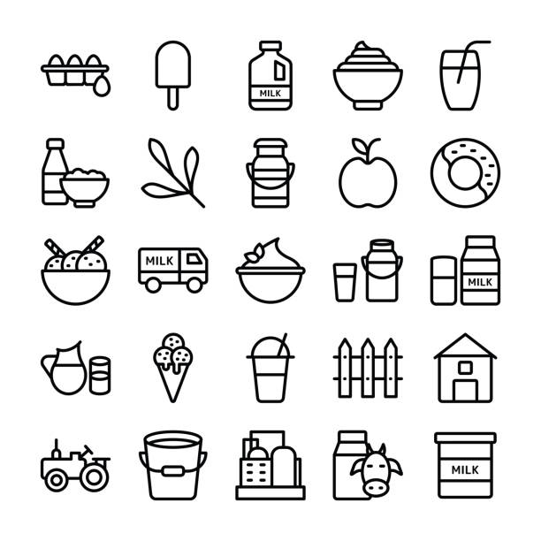

Valeur nutritionelle
Un aperçu des bienfaits nutritionnels, mesurés et expliqués
Ingrédient
Chaque ingrédient a un rôle : goût, texture, conservation et valeur nutritionnelle
(odre, additifs, fréquence)

Un aperçu des bienfaits nutritionnels, mesurés et expliqués
Chaque ingrédient a un rôle : goût, texture, conservation et valeur nutritionnelle
(odre, additifs, fréquence)